Our 8-Week Journey
Week 1: Introduction & Initial Field Visit
Week 1 Overview:
- Focused on understanding Gangavaram Village and its agricultural environment.
- Visited the village and explored the surrounding agricultural fields.
- Interacted with local farmers and village elders.
- Gathered initial information about farming practices and crop cultivation.
- Observed soil conditions and agricultural field conditions.
- Collected information about water availability and irrigation practices.
What We Did:
- Explored the Village: Understood the local environment, lifestyle, and agricultural activities.
- Visited Agricultural Fields: Observed the crops being cultivated and the general condition of the fields.
- Interacted with Farmers: Discussed farming practices and cultivation patterns with local farmers and elders.
- Studied Farming Practices: Gathered information about crops, traditional cultivation methods, and long-term farming practices.
- Observed Water & Irrigation Sources: Identified the main sources of water used for agricultural activities.
- Observed Soil & Field Conditions: Examined the soil surface, field conditions, and visible signs related to soil health.
Our Initial Understanding:
- Understood the importance of directly interacting with farmers.
- Gained an initial understanding of local agricultural practices.
- Identified the importance of observing real field conditions.
- Understood some of the factors affecting crop cultivation and soil health.
- Collected preliminary information for the upcoming research and survey.
Field Visit Gallery:
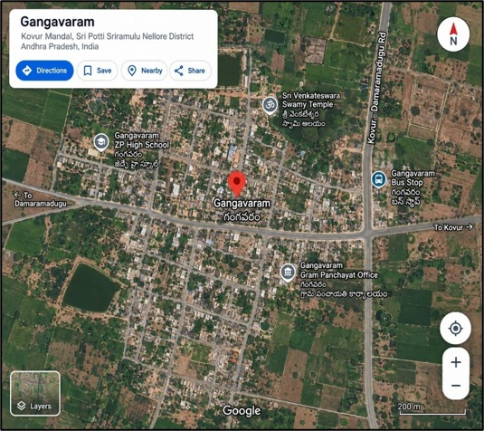
Gangavaram Village — Our CSP Project Location
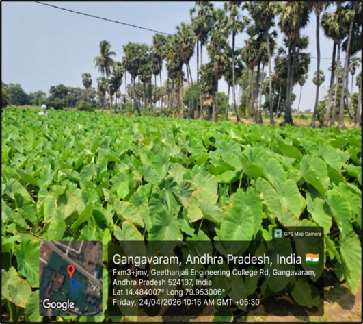
Observation of Crops and Agricultural Field Conditions
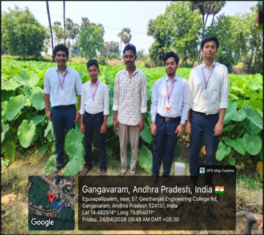
Interaction with a Local Farmer
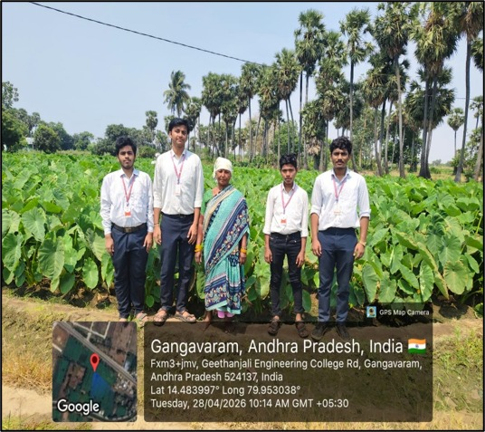
Our Team During the Initial Village Visit
Week 2: Survey & Data Collection
Week 2 Overview:
- Focused on collecting detailed information about farming practices and agricultural expenses.
- Conducted surveys with farming households to understand fertilizer usage and seasonal expenses.
- Studied crop diseases, insect pests, and their occurrence during cultivation.
- Interacted with farmers and agricultural workers to understand their experiences.
- Collected information about off-season agricultural activities and employment.
- Gathered responses through questionnaires for further analysis.
What We Did:
- Conducted Household Surveys: Collected information about chemical fertilizer usage and expenditure during different farming seasons.
- Studied Crop Diseases & Pests: Interacted with farmers to identify common crop diseases and seasonal insect pest problems.
- Observed Agricultural Activities: Visited agricultural fields to understand different cultivation activities and farming conditions.
- Interacted with Agricultural Workers: Discussed off-season employment opportunities and wage-related activities with landless agricultural workers.
- Collected Questionnaire Responses: Organized and compiled responses from 25 questionnaire sheets for further analysis.
Our Initial Understanding:
- Understood the financial dependence of farmers on chemical fertilizers.
- Identified common crop diseases and seasonal pest problems.
- Gained information about agricultural employment during the off-season.
- Understood the importance of collecting information directly from farmers.
- Learned how questionnaires can be used to collect and organize field data.
- Collected preliminary data that will support our further research and analysis.
Field Visit Gallery:

Observation of Farmers During Agricultural Activities
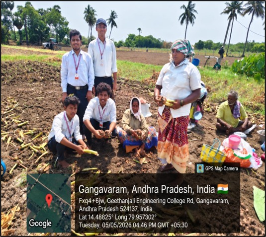
Interaction with Farmers During the Field Survey
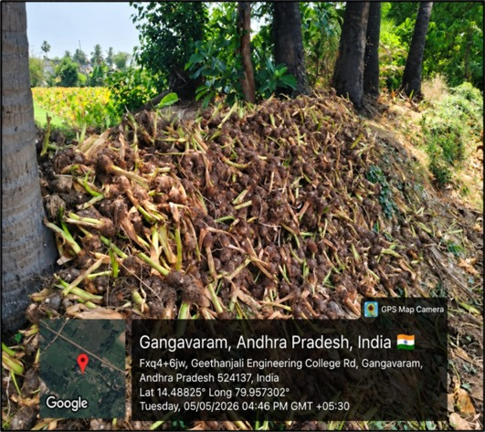
Observation of Crop Cultivation and Field Conditions
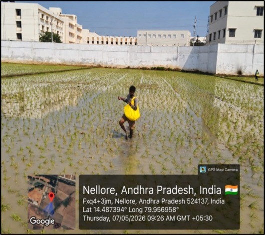
Observation of Paddy Cultivation Practices
Week 3: Observation & Crop Study
Week 3 Overview:
- Focused on detailed observation of soil conditions and agricultural fields.
- Studied topsoil texture, surface cracking, moisture retention, and soil structure.
- Observed different crop plots to understand plant development and crop health.
- Examined the effects of continuous cultivation on soil and crops.
- Observed the condition of bare and unplanted fields during the summer period.
- Recorded field observations for identifying major agricultural problems.
What We Did:
- Observed Soil Conditions: Inspected topsoil texture, surface cracking, hardness, and moisture retention in agricultural fields.
- Studied Soil Structure: Observed soil compaction and changes in soil structure caused by continuous cultivation and field conditions.
- Studied Crop Plots: Examined Chilli, Okra, and Taro root cultivation plots to observe plant development and crop health.
- Observed Root Health: Examined crop roots and identified visible signs of root-related problems such as root rot.
- Observed Wind Erosion: Studied the effects of wind erosion on bare and unplanted summer fields where the topsoil was exposed.
- Observed Water Management: Examined field drainage systems and traditional water management methods used during dry periods.
- Recorded Field Observations: Organized the observations collected from different agricultural fields to identify areas requiring further attention.
Our Initial Understanding:
- Understood the importance of healthy topsoil for crop growth.
- Identified visible signs of soil compaction and structural degradation.
- Gained knowledge about crop development and root health.
- Observed the effects of leaving topsoil exposed in bare fields.
- Understood the importance of proper drainage and water management.
- Collected detailed field observations to support our further research.
Field Visit Gallery:
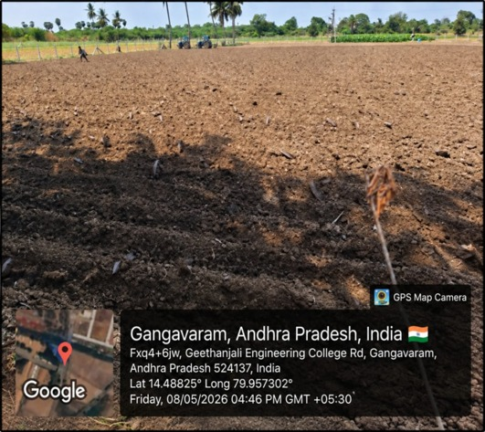
Observation of Soil Structure and Agricultural Field
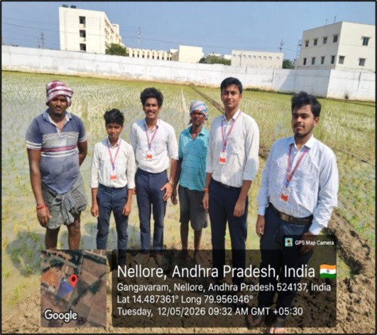
Interaction and Field Study with Local Farmers
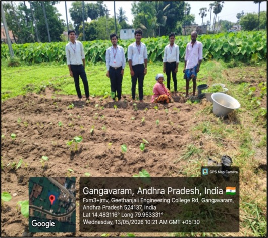
Observation of Crop Growth and Field Conditions
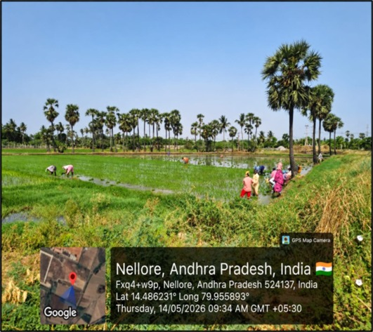
Observation of Agricultural Activities in the Village
Week 4: Survey Analysis & Findings
Week 4 Overview:
- Focused on analyzing the information collected during the field survey.
- Organized the raw questionnaire responses into structured categories.
- Calculated percentages related to crop rotation awareness and farming practices.
- Compared agricultural input expenses between continuous cultivation and rotated fields.
- Studied farmers' observations about changes in crop yield and soil fertility.
- Prepared graphical summaries to present the survey findings clearly.
What We Did:
- Organized Survey Data: Sorted the collected questionnaire responses and grouped the information into different categories for analysis.
- Analyzed Crop Rotation Awareness: Calculated percentage values to understand farmers' awareness and practice of crop rotation.
- Compared Farming Expenses: Compared input expenses between continuously cultivated fields and fields where different crops were rotated.
- Prepared Graphical Summaries: Created pie charts and bar graphs to represent the survey results in a simple and understandable way.
- Studied Yield Changes: Analyzed farmers' responses regarding changes in crop yield under continuous cultivation.
- Identified Major Findings: Identified important observations related to soil fertility, crop rotation practices, farming expenses, and farmers' concerns.
Our Key Findings:
- Survey responses showed differences in farmers' awareness and adoption of crop rotation.
- Some farmers observed a decline in crop yield under continuous cultivation.
- Farmers reported concerns related to increasing agricultural input costs.
- Continuous cultivation can create challenges related to soil fertility and crop productivity.
- The survey data provided useful information for planning the farmer awareness activities.
- The collected data was converted into charts and graphical summaries for easy understanding.
Survey Findings:
- Most of the surveyed farmers had some awareness of crop rotation.
- Only a part of the surveyed farmers were regularly following crop rotation practices.
- Several farmers reported a decrease in soil fertility due to repeated cultivation.
- The survey showed a need for greater awareness about the benefits of crop rotation.
- The responses helped us understand the existing farming practices and soil-related concerns.
- The collected information was used to plan suitable awareness activities for the farming community.
Questionnaire Used for Farmers:
- What crops do you grow regularly on your land?
- Do you cultivate the same crop every season?
- Are you aware of crop rotation practices?
- Do you follow crop rotation on your farm?
- Have you observed a decrease in soil fertility due to continuous cultivation of the same crop?
- How often do you use fertilizers on your crops?
Survey Summary:
- Total Farmers Interacted: 25
- Farmers Aware of Crop Rotation: 18
- Farmers Not Aware of Crop Rotation: 7
- Farmers Following Crop Rotation: 11
- Farmers Not Following Crop Rotation: 14
- Farmers Who Observed Soil Fertility Decrease: 15
- Farmers Who Observed No Major Soil Issues: 10
SURVEY RESULTS
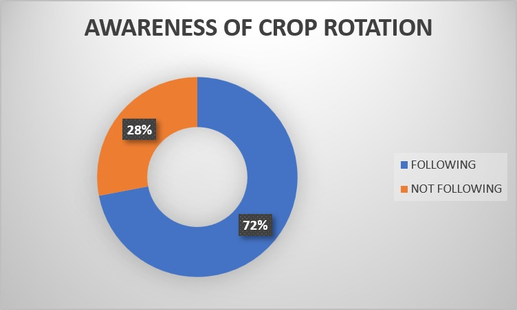
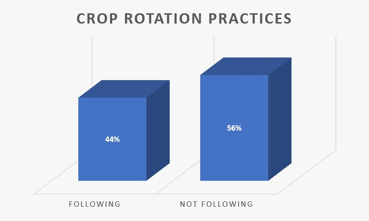
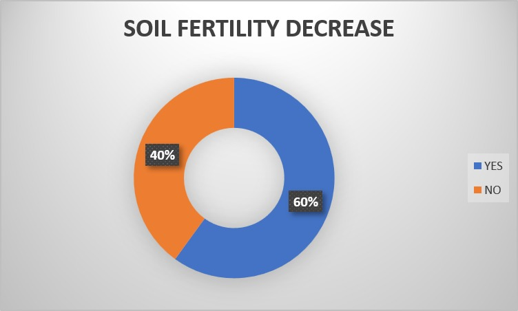
Field Visit Gallery:
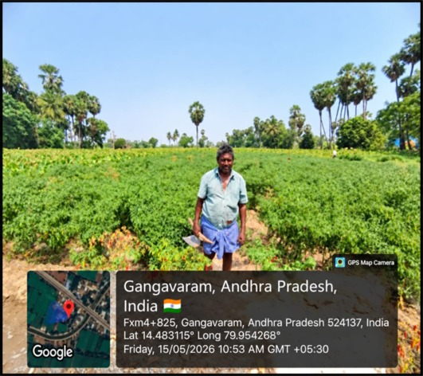
Observation of Agricultural Field Conditions
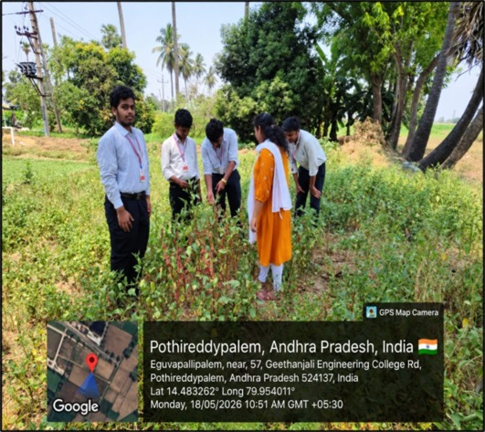
Interaction and Survey Activities with Farmers
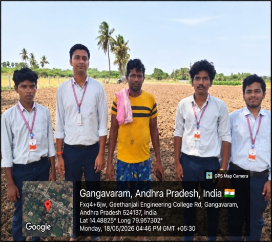
Interaction with a Local Farmer
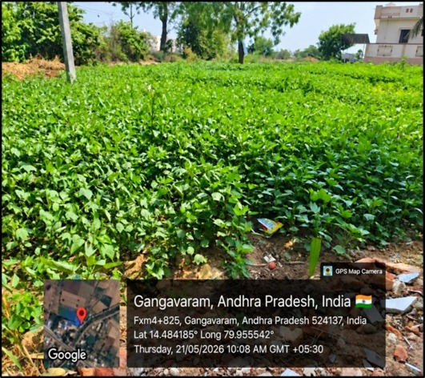
Observation of Crop Growth and Field Conditions
Week 5: Farmer Awareness Program
Week 5 Overview:
- Focused on creating awareness among local farmers about the importance of crop rotation.
- Conducted an educational awareness session on sustainable soil management.
- Explained the benefits of alternating different crop families.
- Demonstrated the role of leguminous crops in improving soil fertility.
- Discussed natural nitrogen fixation and its importance for crop growth.
- Explained how crop rotation can help reduce crop-specific pest problems.
What We Did:
- Conducted Farmer Awareness Session: Organized an educational session to explain the importance and benefits of crop rotation to local farmers.
- Explained Soil Fertility: Discussed how rotating different crops can help maintain soil nutrients and support long-term soil health.
- Demonstrated Leguminous Crops: Displayed Black Gram and Green Gram root samples and explained the presence and role of root nodules.
- Explained Natural Nitrogen Fixation: Explained how leguminous crops contribute to soil nitrogen availability through biological nitrogen fixation.
- Discussed Pest Management: Explained how alternating crop families can interrupt crop-specific pest cycles and reduce recurring pest problems.
- Discussed Water & Soil Conservation: Shared information about suitable irrigation, drainage, and soil conservation practices with farmers.
Our Learning Outcome:
- Improved our ability to communicate agricultural concepts with local farmers.
- Understood the importance of using practical examples during awareness programs.
- Learned how leguminous crops contribute to soil fertility.
- Understood the role of biological nitrogen fixation in sustainable farming.
- Gained knowledge about the relationship between crop rotation and pest management.
- Developed better awareness about sustainable soil and crop management practices.
Awareness Program Gallery:

Farmer Awareness and Field Interaction
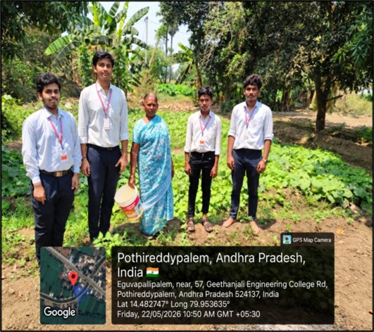
Interaction with Farmers During the Awareness Program
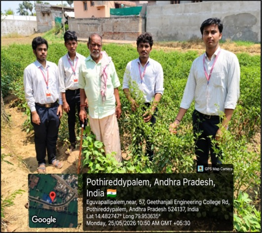
Discussion with Farmers About Crop Cultivation
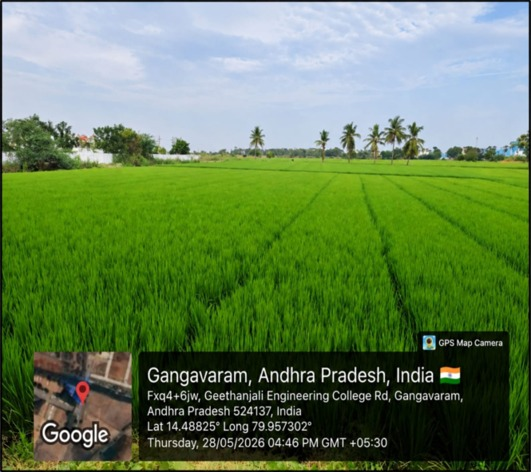
Observation of Crops and Agricultural Field
Week 6: Outcomes & Future Suggestions
Project Outcomes:
- The project helped us understand the existing farming practices in the village.
- Awareness was created among farmers about the importance of crop rotation.
- We gained knowledge about soil fertility issues caused by repeated cultivation of the same crops.
- The study helped us understand the importance of sustainable farming practices.
- Farmers were introduced to practical methods of soil testing and soil management.
- We gained knowledge about green manuring and its role in improving soil health.
Future Suggestions:
- Farmers should be encouraged to follow crop rotation regularly.
- More awareness programs should be conducted to explain modern and sustainable farming practices.
- Organic manures and balanced fertilizers should be used to maintain soil health.
- Regular soil testing should be promoted to understand soil nutrient requirements.
- Farmers should be encouraged to select suitable crops according to soil and seasonal conditions.
- Sustainable soil and water management practices should be promoted among farmers.
Our Learning Outcome:
- Understood the importance of crop rotation for sustainable agriculture.
- Gained practical knowledge about soil health and soil testing.
- Learned about the benefits of green manuring and organic matter.
- Improved our understanding of farmers' challenges and agricultural practices.
- Developed better communication skills through interaction with farmers.
- Understood the importance of creating continuous awareness about sustainable farming.
Week 6 Field Visit Gallery:
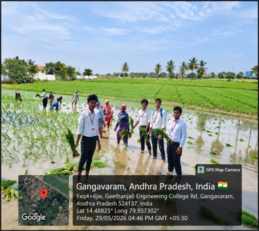
Field Visit and Observation of Agricultural Activities
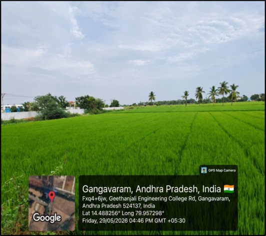
Observation of Crop Growth and Field Conditions
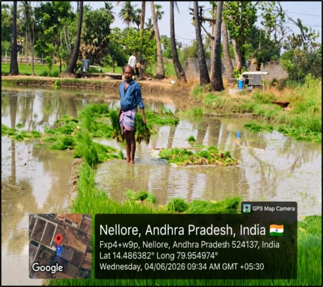
Interaction and Observation During Field Activities
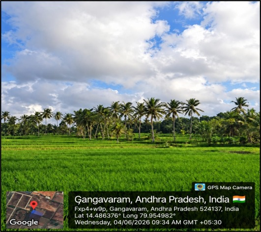
Observation of Agricultural Fields in Gangavaram
Week 7: Farmer Support & Feedback
Week 7 Overview:
- Focused on providing useful resources and support to local farming households.
- Distributed reference materials about crop rotation and sustainable farming practices.
- Shared information about government agricultural support services and subsidized seed programs.
- Conducted final household visits to collect feedback from participating farmers.
- Reviewed the overall response and impact of the project activities.
- Organized field records, survey sheets, and project documentation.
What We Did:
- Distributed Reference Materials: Provided printed crop rotation reference booklets and simple guides to farming households.
- Provided Government Support Information: Shared information about local government agricultural centers and subsidized pulse seed programs.
- Conducted Final Household Visits: Visited participating households to collect feedback about the project activities.
- Collected Farmer Feedback: Recorded responses from farmers to understand their experience and response to the project.
- Reviewed Project Impact: Evaluated the overall response of the farming community to the awareness activities.
- Completed Project Documentation: Organized field records, survey sheets, weekly reports, and other project documents.
- Thanked the Community: Expressed gratitude to the farmers, village elders, and community members for their support.
Our Learning Outcome:
- Learned the importance of providing farmers with useful agricultural information.
- Understood how government agricultural support programs can benefit farming communities.
- Gained experience in collecting and understanding feedback from farmers.
- Understood the importance of evaluating the impact of a community service project.
- Improved our skills in organizing field records and project documentation.
- Developed better communication and interaction skills through engagement with farmers.
Field Visit Gallery:

Farmer Support and Community Interaction

Collection of Farmer Feedback

Final Household and Community Visit

Community Interaction During the Final Stage
Week 8: Documentation & Project Closure
Week 8 Overview:
- Focused on completing the final stage of the Community Service Project.
- Reviewed and organized all the activities and information collected during the project.
- Prepared the final presentation and project documentation.
- Presented the project activities and outcomes to faculty and students.
- Collected feedback and suggestions from the evaluators.
- Completed the final project report and reflected on the overall project journey.
What We Did:
- Final Presentation Preparation: Organized the final presentation and reviewed all the project content for clear and effective delivery.
- Project Presentation: Presented our Community Service Project to faculty members and students and explained the work carried out in the village.
- Project Exhibition: Presented project information through posters and explained our activities and findings to visitors.
- Received Feedback: Collected comments and suggestions from evaluators to understand the strengths of our project and areas for improvement.
- Final Documentation: Prepared and submitted the final project report with the activities, findings, outcomes, and suggestions included.
- Project Reflection: Reflected on our overall experience, teamwork, learning, farmer interaction, and contribution to the community.
Our Learning Outcome:
- Improved our presentation and public speaking skills.
- Learned how to organize and present project information effectively.
- Gained experience in preparing formal project documentation.
- Understood the importance of teamwork and communication throughout a community project.
- Learned how to receive and use feedback for improving our work.
- Reflected on the knowledge and experience gained throughout the Community Service Project.
- Successfully completed the project documentation and project closure activities.